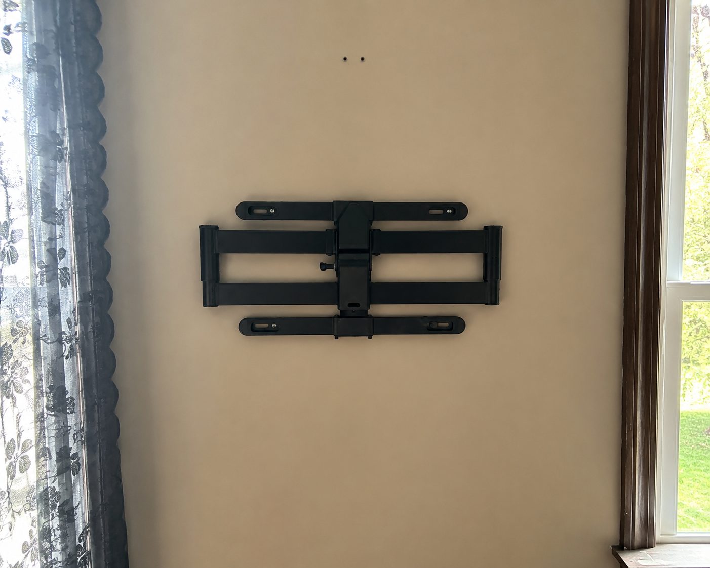
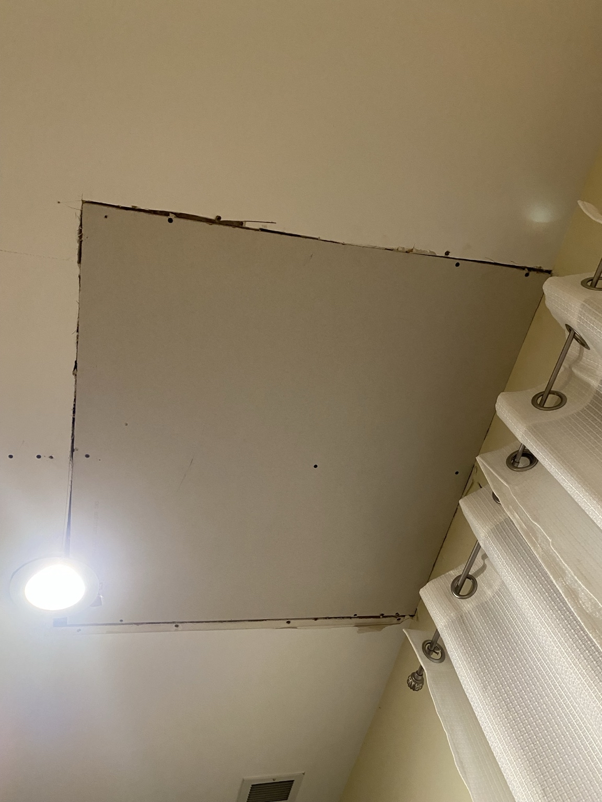
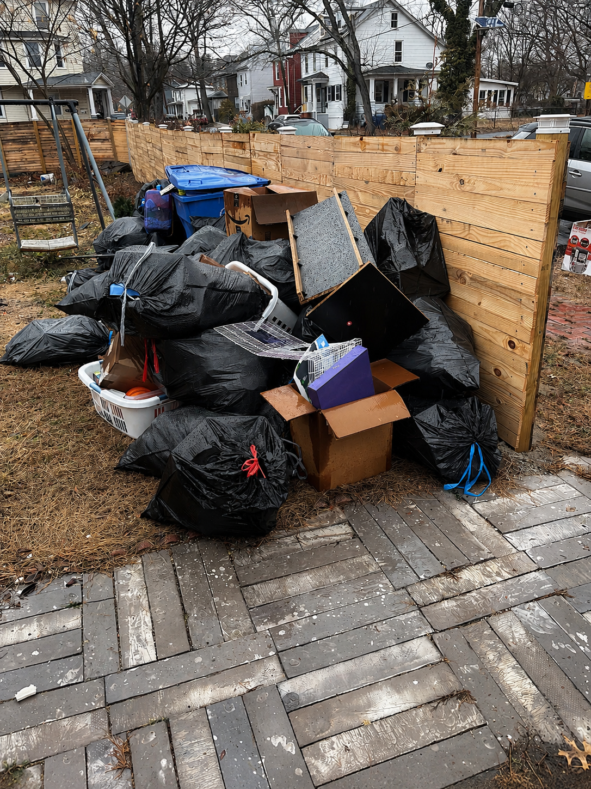
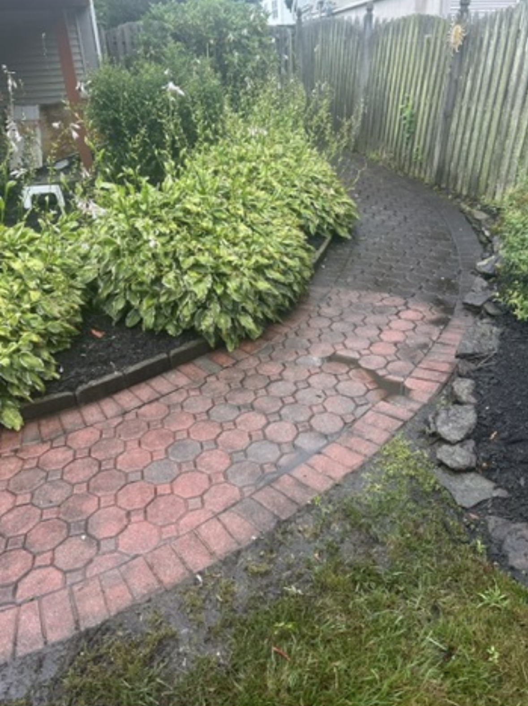

TV Mounting
TV mounting for living rooms, bedrooms, apartments, offices, rentals, and home setups. Great for homeowners who want a cleaner look without dealing with brackets, studs, leveling, and setup.
South Jersey Repairs helps homeowners, landlords, investors, and property managers handle the repair list, update the home, clean out the junk, and keep properties moving.
From TV mounting and drywall installation to pressure washing, bathroom repairs, move-out repairs, and rental maintenance, we make it easier to get things fixed without calling five different people.

South Jersey Repairs provides home repair, handyman services, drywall repair, drywall installation, TV mounting, junk removal, pressure washing, garbage disposal replacement, toilet replacement, faucet replacement, ceiling fan installation, furniture assembly, cabinet repair, deck painting, property maintenance, and cleanout services across South Jersey, Philadelphia, and surrounding areas.
From drywall repair and full drywall installation to TV mounting, junk removal, pressure washing, bathroom repairs, garbage disposal replacement, toilet replacement, faucet replacement, ceiling fan installation, furniture assembly, cabinet repair, deck painting, property cleanouts, and move-out repairs, South Jersey Repairs helps keep homes and properties looking their best.

TV mounting for living rooms, bedrooms, apartments, offices, rentals, and home setups. Great for homeowners who want a cleaner look without dealing with brackets, studs, leveling, and setup.

Drywall patches, wall repairs, ceiling repairs, water-damage areas, sheetrock repair, new drywall installation, finishing, sanding, and paint-ready prep.

Junk hauling, garage cleanouts, move-out cleanups, rental property cleanouts, furniture removal, trash removal, and cleanup help for homes and properties.

Exterior cleaning for homes, siding, patios, sidewalks, driveways, fences, decks, walkways, and property cleanup projects.

Bathroom repairs, fixture swaps, caulking, small updates, cleanup, refresh work, and repair items that help bathrooms look better and function better.
South Jersey Repairs helps homeowners, landlords, and property owners with drywall repair, drywall installation, ceiling fan installation, TV mounting, faucet replacement, toilet replacement, garbage disposal replacement, furniture assembly, cabinet repair, deck painting, deck staining, pressure washing, bathroom repairs, shelving installation, trim repair, move-in repairs, move-out repairs, and general property maintenance services across South Jersey, Philadelphia, and surrounding areas.
Most homeowners do not want to spend weeks chasing separate people for every small job. South Jersey Repairs is built for the real home repair list: mount the TV, patch the wall, clean out the garage, wash the house, fix the bathroom issue, handle the punch list, and get the property looking right.
Whether you just moved in, are getting ready to sell, need a room finished, or finally want to knock out the repairs you have been putting off, we help with practical home repair and improvement work across South Jersey and the Philadelphia area.
South Jersey Repairs handles the everyday repair, installation, cleanout, drywall, and property maintenance jobs that homeowners, landlords, and property managers need done across South Jersey, Philadelphia, and surrounding areas.
Drywall is one of the most important repair services for homes and rentals. We help with holes in walls, ceiling patches, damaged sheetrock, water-damaged drywall areas, cutouts from plumbing or electrical work, drywall replacement, new drywall installation, finishing, sanding, and paint-ready prep.
TV mounting is a high-demand service for homeowners, apartments, rentals, bedrooms, living rooms, finished basements, and offices. We help with mounting TVs, leveling, bracket setup, stud placement, safer installs, and cleaner room layouts.
Junk removal is useful for homeowners, landlords, property managers, real estate agents, and tenants moving out. We help remove unwanted items, clean up properties, clear garages and basements, and handle move-out junk or rental cleanup.
Exterior cleaning helps homes and rental properties look maintained. We help with house washing, pressure washing, sidewalks, driveways, patios, decks, fences, walkways, and exterior cleanup before parties, listings, move-ins, or seasonal maintenance.
South Jersey Repairs is built around the jobs homeowners and property owners actually need help with. These extra service keywords also help customers and Google understand the full range of work.
South Jersey Repairs offers local handyman services, but the goal is bigger than one small repair. We help homeowners, landlords, investors, and property managers with a wider range of home repair, installation, cleanout, drywall, pressure washing, and property maintenance projects across South Jersey, Philadelphia, and surrounding areas.
Instead of searching for a different person for drywall repair, TV mounting, junk removal, faucet replacement, toilet replacement, garbage disposal replacement, ceiling fan installation, furniture assembly, cabinet repair, deck painting, or rental turnover repairs, customers can call one local repair company that handles multiple property needs.
Homeowners are a major part of the business, but South Jersey Repairs is also built for rental property owners, landlords, small investors, real estate agents, and property managers who need reliable help between tenants or before listing a property.
Instead of calling a drywall person, junk hauler, pressure washer, assembler, and repair tech separately, property owners can use one local repair company for the punch list, cleanup, and maintenance items.
South Jersey Repairs serves Burlington County, Camden County, Gloucester County, Mercer County, Philadelphia, and surrounding communities for drywall repair, TV mounting, junk removal, pressure washing, handyman services, home repairs, and property maintenance.
The goal is simple: be the local repair company people think of when something needs to be fixed, mounted, patched, cleaned out, washed, updated, or maintained.
Many customers do not need one tiny task. They need a few things handled together: mount the TV, repair drywall, remove junk, clean the exterior, fix a bathroom item, assemble furniture, and finish the punch list.
South Jersey Repairs is positioned for that full home repair and property maintenance need.
These answers help customers and search engines understand what South Jersey Repairs offers.
Yes. South Jersey Repairs offers TV mounting for homes, apartments, bedrooms, living rooms, rentals, and offices across South Jersey and the Philadelphia area.
We offer both drywall repair and drywall installation. That includes wall patches, ceiling repairs, sheetrock repair, new drywall installs, finishing, sanding, and paint-ready prep.
Yes. We help homeowners with punch lists, move-in repairs, move-out repairs, fixture work, bathroom repairs, trim, doors, drywall, mounting, assembly, and general home repair items.
Yes. We help landlords, real estate investors, and property managers with rental turnovers, cleanouts, drywall repairs, junk removal, pressure washing, and maintenance items.
Yes. We help with junk removal, furniture removal, garage cleanouts, basement cleanouts, move-out cleanups, rental cleanouts, and general property cleanup.
Yes. Burlington County is a core service area, including Burlington, Mount Laurel, Marlton, Medford, Moorestown, Cinnaminson, Delran, Willingboro, Bordentown, and nearby towns.
Yes. We service Cherry Hill, Voorhees, Haddonfield, Collingswood, Pennsauken, Blackwood, Gloucester Township, Sicklerville, Berlin, and nearby Camden County areas.
Yes, select Philadelphia-area jobs may be available depending on the location, scope of work, and schedule. This may include Northeast Philadelphia, Port Richmond, Fishtown, Manayunk, Roxborough, South Philadelphia, and nearby areas.
Yes. South Jersey Repairs can help with common home repair and installation jobs such as garbage disposal replacement, faucet replacement, toilet replacement, bathroom repairs, and related punch-list items.
Yes. Ceiling fan installation, light fixture installation, shelving, furniture assembly, and other everyday installation jobs may be available depending on the project and location.
Yes. South Jersey Repairs can help with deck painting, deck staining, pressure washing, exterior cleaning, and property refresh projects for homeowners and rental properties.
Same-day and next-day availability may be possible depending on the job, location, and schedule. Call or text to check current availability.
Call, text, or submit the quote form with your location, photos if available, and a short description of what needs to be repaired, mounted, removed, washed, or maintained.
Send the repair list, service needed, town, and photos if you have them. Call or text for faster scheduling.
For the fastest quote, include:
Call or text: 732-556-5590